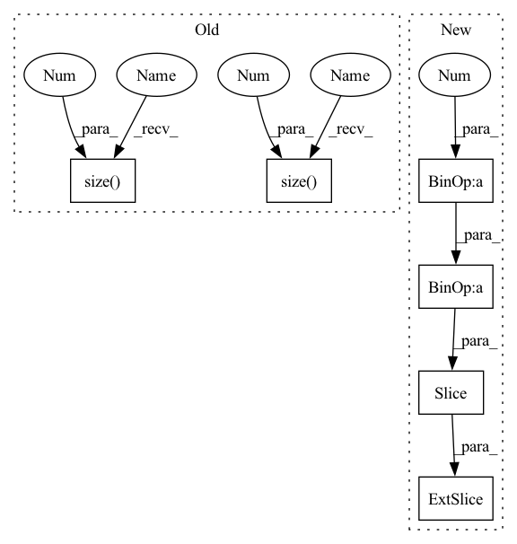

Pattern ID :40920
Before Change
)
x_padded = torch.cat([zero_pad, x], dim=-1)
x_padded = x_padded.view(*x.size()[:2], x.size(3) + 1, x.size(2 ) )
x = x_padded[:, :, 1:].view_as(x)[
:, :, :, : x.size(-1 ) // 2 + 1
] // only keep the positions from 0 to time2
if self.mask_pos_future:After Change
ones = torch.ones((x.size(2), x.size(3)), device=x.device)
x = x * torch.tril(ones, x.size(3) - x.size(2))[None, None, :, :]
return x [..., : pos_len // 2 + 1]
def forward(
self,In pattern: SUPERPATTERN
Frequency: 3
Non-data size: 6
Instances Fragment ID: 115355874
Project Name: speechbrain/speechbrain
Commit Name: a12359c7af7e8ece051b675059d323f7aec86901
Time: 2022-06-22
Author: cornellsamuele@gmail.com
File Name: speechbrain/nnet/attention.py
M Class Name: RelPosMHAXL
N Class Name: RelPosMHAXL
M Method Name: rel_shift(2)
N Method Name: rel_shift(2)
M Parent Class: nn.Module
N Parent Class: nn.Module
M File Name: speechbrain/nnet/attention.py
N File Name: speechbrain/nnet/attention.py
M Start Line: 469
M End Line: 483
N Start Line: 471
N End Line: 482
Before Change
)
x_padded = torch.cat([zero_pad, x], dim=-1)
x_padded = x_padded.view(*x.size()[:2], x.size(3 ) + 1, x.size(2 ) )
x = x_padded[:, :, 1:].view_as(x)[
:, :, :, : x.size(-1) // 2 + 1
] // only keep the positions from 0 to time2After Change
ones = torch.ones((x.size(2), x.size(3)), device=x.device)
x = x * torch.tril(ones, x.size(3) - x.size(2))[None, None, :, :]
return x [..., : pos_len // 2 + 1]
def forward(
self, Fragment ID: 115355876
Project Name: speechbrain/speechbrain
Commit Name: a12359c7af7e8ece051b675059d323f7aec86901
Time: 2022-06-22
Author: cornellsamuele@gmail.com
File Name: speechbrain/nnet/attention.py
M Class Name: RelPosMHAXL
N Class Name: RelPosMHAXL
M Method Name: rel_shift(2)
N Method Name: rel_shift(2)
M Parent Class: nn.Module
N Parent Class: nn.Module
M File Name: speechbrain/nnet/attention.py
N File Name: speechbrain/nnet/attention.py
M Start Line: 469
M End Line: 483
N Start Line: 471
N End Line: 482
Before Change
embeddings = self.tgt_embed(tgt)
// Memory querying and responding for textual features
dummy_memory_matrix = memory_matrix.unsqueeze(0).expand(embeddings.size(0), memory_matrix.size(0 ) , memory_matrix.size(1 ) )
//dummy_memory_matrix = torch.stack([self.memory_matrix[labels[i] == 1, :] for i in range(embeddings.size(0))])
responses = self.cmn(embeddings, dummy_memory_matrix, dummy_memory_matrix)
embeddings = embeddings + responsesAfter Change
for j in range(len(labels[i])):
if labels[i, j] == 1:
if j != len(labels[i])-1:
query_matrix.extend(memory_matrix [j*self.num_prototype :(j+1 )* self.num_prototype, :])
else:
query_matrix.extend(memory_matrix[j * self.num_prototype:, :])
Fragment ID: 115355879
Project Name: markin-wang/xpronet
Commit Name: 8a47fdb250bd2c0c90632d5faf0fa10481af5ee7
Time: 2021-11-21
Author: cserwj@gmail.com
File Name: modules/base_cmn.py
M Class Name: Transformer
N Class Name: Transformer
M Method Name: decode(8)
N Method Name: decode(7)
M Parent Class: nn.Module
N Parent Class: nn.Module
M File Name: modules/base_cmn.py
N File Name: modules/base_cmn.py
M Start Line: 74
M End Line: 79
N Start Line: 75
N End Line: 97
Before Change
)
x_padded = torch.cat([zero_pad, x], dim=-1)
x_padded = x_padded.view(*x.size()[:2], x.size(3 ) + 1, x.size(2))
x = x_padded[:, :, 1:].view_as(x)[
:, :, :, : x.size(-1 ) // 2 + 1
] // only keep the positions from 0 to time2
if self.mask_pos_future:After Change
ones = torch.ones((x.size(2), x.size(3)), device=x.device)
x = x * torch.tril(ones, x.size(3) - x.size(2))[None, None, :, :]
return x [..., : pos_len // 2 + 1]
def forward(
self, Fragment ID: 115355881
Project Name: speechbrain/speechbrain
Commit Name: 84bca108f8c3739bc2f058bab7e43db32c46e090
Time: 2022-07-01
Author: dominik.wagner@th-nuernberg.de
File Name: speechbrain/nnet/attention.py
M Class Name: RelPosMHAXL
N Class Name: RelPosMHAXL
M Method Name: rel_shift(2)
N Method Name: rel_shift(2)
M Parent Class: nn.Module
N Parent Class: nn.Module
M File Name: speechbrain/nnet/attention.py
N File Name: speechbrain/nnet/attention.py
M Start Line: 470
M End Line: 484
N Start Line: 472
N End Line: 483